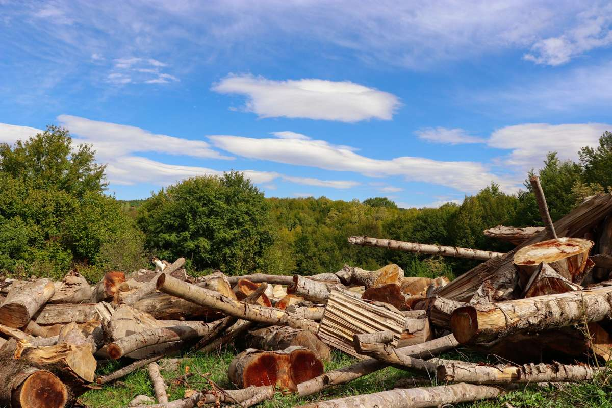

Most North Texas cities keep brush and limbs off their bulky trash list on purpose. Bagged yard waste, cut branches and stacked limbs sit on the restricted side of the rules in city after city, which is why the pile by your fence keeps getting driven past. Here is what the city will collect, what it refuses, and what we haul.

The short version is that yard waste usually has its own separate program with its own rules, and a pile that misses those rules stays put.
Why the pile is still sitting there
A homeowner trims a tree or takes out a shrub line, stacks the result at the curb, and waits for the bulky trash truck. It comes, it takes the old mattress two houses down, and it leaves the limbs.
That is not a missed stop. McKinney's own residential trash services page lists bagged yard waste, brush and limbs under restricted items for bulky collection, alongside construction material and treated fence panels. Plano publishes its own separate list of bulky waste accepted items, and Frisco runs bulk trash pickup as a scheduled request rather than a standing curbside service. Three neighboring cities, three different sets of rules, and none of them treat a brush pile the way people assume.
So the pile sits. Then it rains, the bottom of it sinks into the grass, and now there is a dead patch under it too.
What counts as brush and what counts as something else
Cities draw a hard line here, and the line is usually about what the material is rather than how much of it there is.
Brush is the woody green stuff that came off a living plant in your yard. Limbs, branches, trimmed shrubs, hedge cuttings, a small tree somebody took down. Grass clippings and leaves are yard waste, which most cities handle on a different schedule with different containers.
Then there is everything people stack into the same pile and should not. Lumber and fence pickets are construction debris. A cut-up deck is construction debris. Landscape timbers and railroad ties are treated wood. Stumps with dirt and rock still in the root ball are their own problem, because the weight is soil rather than wood. Dirt, sod, brick and broken concrete are dense material and get handled differently by anybody who hauls, including us.
One pile at the curb, five different categories, which is exactly why the truck skips it.
Separate the pile before you call anybody, including us. Woody brush in one stack, lumber and fence boards in another, dirt and brick in a third. It takes twenty minutes, it makes the quote faster, and it is often the difference between a city crew taking part of it for free and taking none of it.
What actually happens to brush after it leaves
Clean brush is one of the easier things to keep out of a landfill, which is the one piece of good news in this whole post. Wood that arrives without nails, wire, dirt or trash mixed in gets ground into mulch. That is the standard path across North Texas, and the TCEQ's recycling program pages cover how organic material is handled at the state level.
If you have the space and the patience, the EPA's composting at home guidance covers the smaller end of this. Leaves and clippings compost well. Thick limbs do not, at least not in any timeframe a homeowner cares about.
Contaminated brush is the part that changes the answer. Once a pile has a roll of old wire fence buried in it, or pickets with nails, or a bag of household trash somebody tossed on top, it stops being clean wood and starts being mixed waste. That is a big reason crews care how a pile is stacked.
What we take off a brush job
Woody debris and the mess around it. Limbs and branches from a trim or a takedown. Shrub and hedge rows pulled out for a landscaping change. Dead trees already on the ground. Bagged leaves and clippings. Old landscape edging, decorative rock nobody wants, and the black plastic sheeting under it. Broken planters, dead potted plants, and the pallet the sod came on. The leftover pickets from a fence repair, which are covered in more detail in fence and deck teardown debris.
We will also clear the pile that got a letter from the neighborhood, which usually comes with a deadline attached. That whole situation, including what a recheck actually looks at, is in HOA violation letters and yard cleanups.
What we will not load is the hazardous side of a garage or shed. Weed killer, pesticide, pool chemicals, gas cans, and old fuel from the mower. Those go to your city's household chemical collection program, never into a trailer with the brush. The complete line on what rides and what does not is in what junk removal will and will not take. A propane cylinder off an old grill is the same story, and the old grill and patio furniture post covers where it goes instead.
We also do not cut down standing trees. If the tree is still up, call an arborist or a tree service first, tell them to leave the wood, and call us for the pile afterward. That order usually saves you money, because the cutting crew is not charging you to haul.
Do the free route first when it fits
If you have a small amount of clean brush, time to wait, and a city program that will take it, use the program. We would rather tell you that than take a job you did not need to pay for. Check your own city first, because the rules genuinely differ from one suburb to the next out here.
Where the free route runs out is usually one of three places. The pile is past whatever limit the city sets. The material is mixed, and the mixed part is exactly what the city refuses. Or there is a date on the calendar, a closing, a party, an HOA recheck, and the next collection window lands after it.
That is when a crew makes sense. We work across the northern suburbs, including Plano, McKinney, Frisco, Allen, Richardson, Little Elm, Prosper, The Colony, Wylie and Fairview. We take the brush pile off the curb in Allen and handle the same pickup for a stacked limb pile in Little Elm too.
How the job runs
Send a photo of the pile from far enough back that the whole thing is in frame, and say whether there is lumber, dirt or rock mixed into it. Tell us how the crew gets to it, side gate, alley, or straight off the driveway, because access is most of what decides how long a yard job takes.
A crew comes out, looks at what is actually there, and gives you a firm number before anything gets loaded. The quote is the bill, disposal included. They load by hand, they rake the spot the pile was sitting on, and they leave. Our own people do this work, not gig labor hired off an app that morning.
We run seven days a week. Call before noon and the same afternoon is typical across the northern suburbs, though typical is the honest word rather than a promise. The service page for this work is yard debris removal, and you can send photos whenever the pile has sat long enough.
Frequently asked questions
Do I have to bundle or bag the brush before you come?
No. Bundling is a city requirement, not ours. A loose pile is fine. The one thing that helps is keeping lumber, dirt and rock out of the brush stack so the load stays clean.
Will you take a stump?
Depends on the stump. A cut stump with the dirt knocked off is usually fine. A full root ball with soil and rock still in it is dense material and gets handled differently, so send a photo and we will tell you straight.
Can you take the brush and the old fence at the same time?
Yes, and it is common. They are different material streams on our end, but it is one stop for you. Say both are there when you book so the crew plans for it.
What happens to the brush after you load it?
Clean wood goes to be ground into mulch wherever a facility will take it. That is one of the reasons we care about keeping wire, nails and trash out of the pile.
My HOA gave me a deadline. How fast can this happen?
Often the same day if you call before noon, and usually the next morning if you call later. We will tell you honestly when we can be there rather than promise a window we cannot hold.
A brush pile is the rare yard problem that gets worse by sitting rather than just staying the same. The rest of what we haul is on the services page.